Video
A demonstration of the Midnight Wurli library for Decent Sampler.
Wurlitzer Electric Piano plugin preset for Decent Sampler (Midnight Wurli) — Watch on YouTube
Included formats
- VST3 (macOS)
- AU (macOS)
- Standalone application (macOS)
- Decent Sampler (macOS, Windows and Linux)
The plugin version is currently released for macOS only. Windows and Linux versions are planned. Until then, the Decent Sampler version covers those platforms.
The plugin version
The plugin is a self-contained instrument, available as VST3, AU and Standalone. Samples, graphics and impulse responses are all embedded in the plugin itself, losslessly compressed, so there are no external files to install or locate. Only the samples for the selected preset are loaded into memory, and a fresh instance lets you choose which preset to load before anything is decoded.
The plugin has all the controls and features from the Decent Sampler version, including MIDI learn, the master volume fader with output meter, value readouts for the knobs and full DAW automation. On top of that, the plugin version adds:
- Drift wheels next to the pitch and modulation wheels, adding a subtle random pitch and volume drift to each voice.
- A velocity curve setting in the settings menu.
The Decent Sampler version
This version of Midnight Wurli is an instrument preset / sample library for Decent Sampler. If you're new to Decent Sampler, I recommend checking out this guide first.
Technical specification
| Sample rate | Bit depth | Channels | Number of files | File size | |
|---|---|---|---|---|---|
| Samples | 48 kHz | 24 bit | 1 (mono) | 2332 | 1.20 GB |
| Impulse responses (Amplifiers) | 48 kHz | 24 bit | 1 (mono) | 4 | 356.00 KB |
| Impulse responses (Effects) | 48 kHz | 24 bit | 2 (stereo) | 2 | 481.00 KB |
Instrument Presets
Midnight Wurli
- Full version of the instrument with 36 samples per key.
- 18 note-on samples and 18 release samples per key.
- Round robin samples per velocity group to avoid repetition.
- Includes mechanical noises (release and damper).
- Includes all six impulse responses: four amplifiers, one echo, and one room reverb.
- 28 damper pedal samples.
Midnight Wurli (Lite)
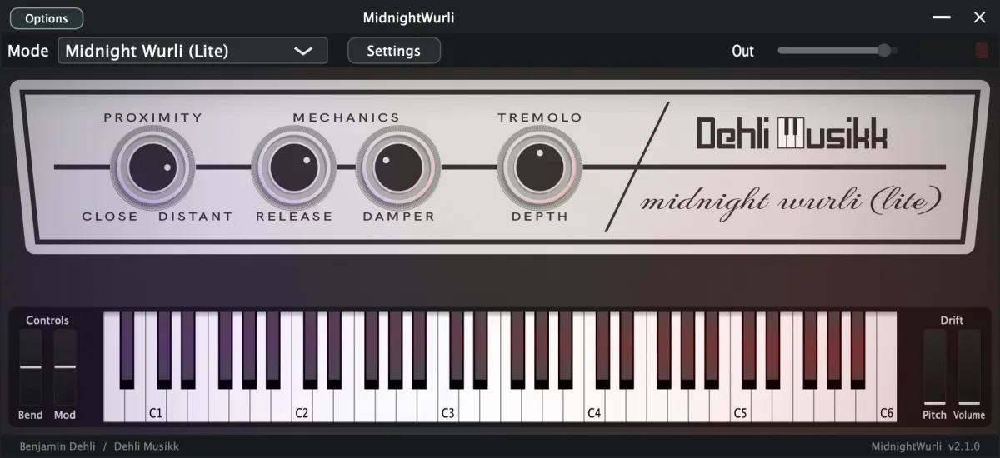
- A lightweight version of the instrument designed for lower CPU and RAM usage.
- Contains a single sample per velocity group for each key (no round robin).
- Impulse responses (amplifiers, echo, room) are disabled.
- Still includes basic mechanical sounds but with simplified behavior.
User Interface
Proximity
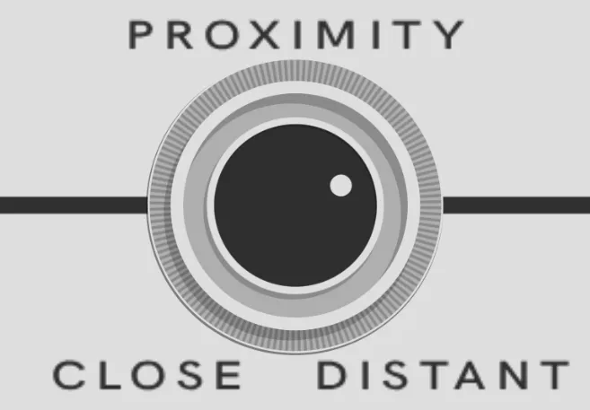
- Crossfades between the direct line out and contact microphone audio.
- Turning the knob toward "Close" emphasizes the contact mic (mechanical sounds).
- Turning toward "Distant" emphasizes the clean line out signal.
- Affects the balance of both tonal and mechanical elements.
Mechanics
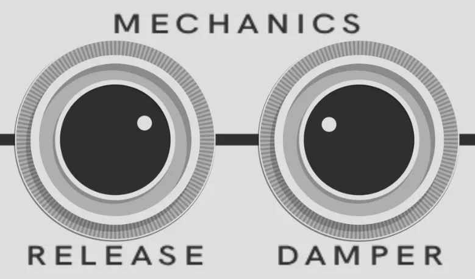
Release
- Controls the volume of the key release noise.
- The audio is affected by the current setting of the Proximity knob.
- Represents the subtle mechanical sound of a key returning after being released.
Damper
- Controls the volume of the damper (sustain pedal) noise.
- Includes pedal down and pedal up samples.
- Also influenced by the Proximity setting.
Tremolo
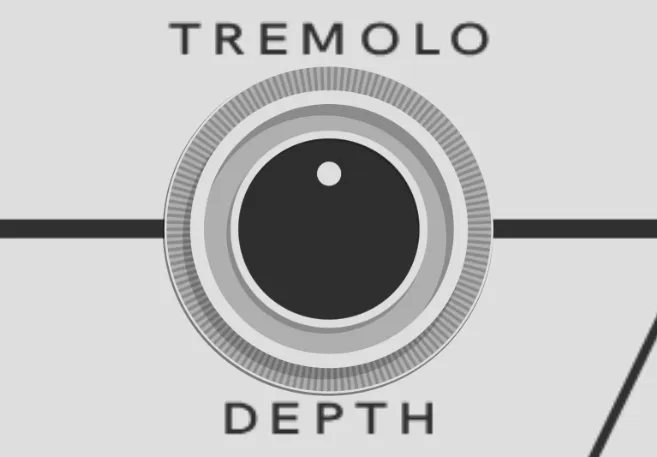
- Controls the depth of the built-in tremolo effect, which is named vibrato on the original Wurlitzer 200A.
- Tremolo is applied after sample playback and before amplifier, tape echo and room reverb, emulating the original instrument’s modulation circuit.
Amplifier
- Selects one of five amplifier settings:
- Direct (bypasses all amp simulation)
- American (Fender Twin Reverb)
- British (Vox AC15H1TV)
- Japanese (Roland JC-120 Jazz Chorus)
- Norwegian (Tandberg Model 2 T)
- All amplifier impulse responses were recorded with a Shure SM57 and a Royer R-121 microphone.
Echo
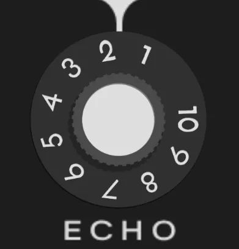
- Blends in a tape echo impulse response with a slapback delay characteristic.
- Positioned before the amplifier in the signal chain.
Room
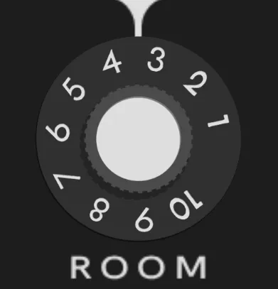
- Adds stereo room reverb via an impulse response.
- Positioned after the amplifier in the signal chain.
Volume
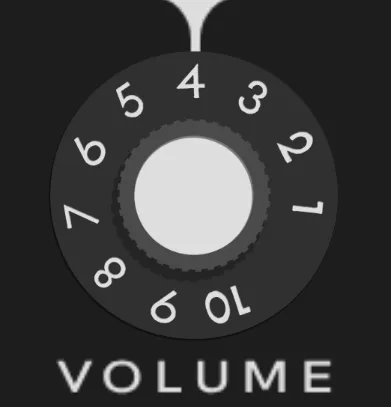
- Master volume control for the entire instrument.
- Applied after all effects in the signal path.
Equipment used
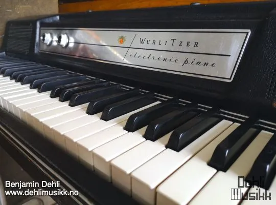
Wurlitzer 200A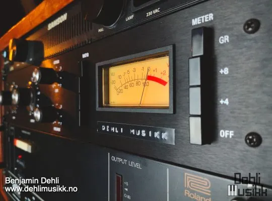
Hairball Audio FET/RACK Revision D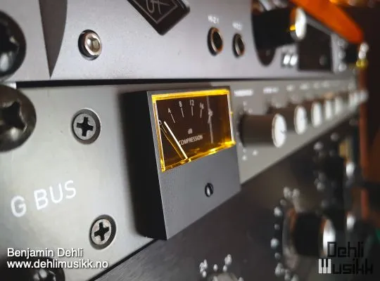
DIY Recording Equipment G Bus VCA Compressor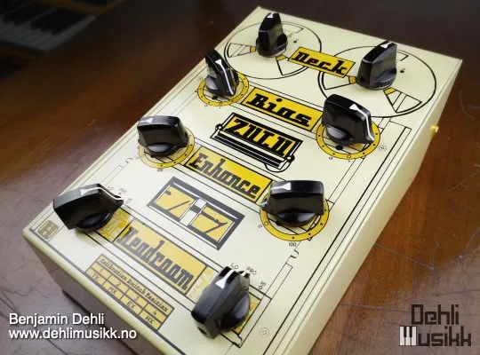
Handsome Audio Zulu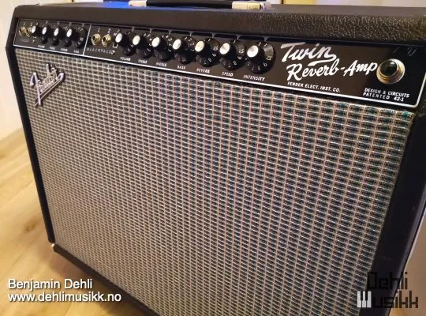
Fender Twin Reverb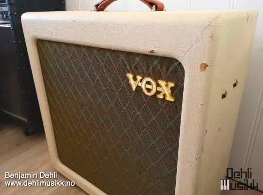
Vox AC15H1TV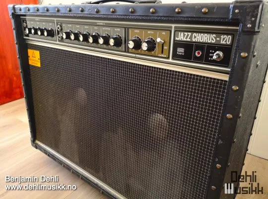
Roland JC-120 Jazz Chorus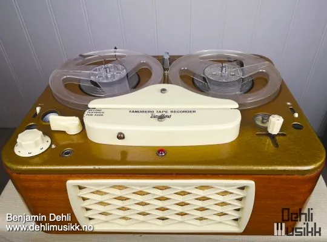
Tandberg Model 2 T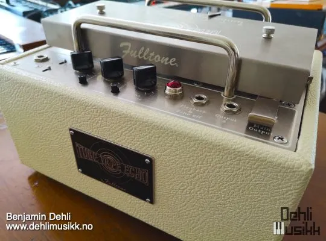
Fulltone Tube Tape Echo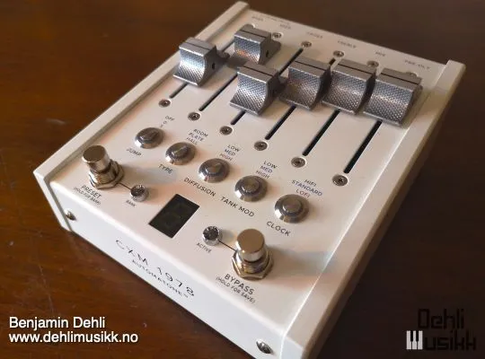
Chase Bliss Audio & Meris CXM 1978
Release notes
Version 2.1.02026-08-01
The changes in this release apply to the plugin version only. The DecentSampler version is unchanged.
- Added a translucent overlay graphic on top of the interface.
- Keys that are hovered or held on the keyboard are now shaded in a neutral way instead of turning yellow:
- White keys turn darker.
- Black keys turn brighter.
- The computer keyboard keeps playing notes even while you adjust a control with the mouse.
- The dropdown menus inside the interface now use colors that match the instrument.
Version 2.0.02026-07-19
- Added a plugin version. See the section "The plugin version".
- Effect bindings now use effectIndex, and a misleading type="percent" attribute was removed.
- Fixed the loNote value for the keyboard colors.
Version 1.0.02025-08-13
- First version released.
About this repository
This repository contains the source for both the Decent Sampler library (the DecentSampler folder) and the plugin version. The plugin is a thin wrapper around the shared Dehli Musikk sampler engine, and a converter translates the Decent Sampler library into the engine's native preset format at build time. The audio files are not part of this repository, since the samples are a paid product. The full version is available from store.dehlimusikk.no.